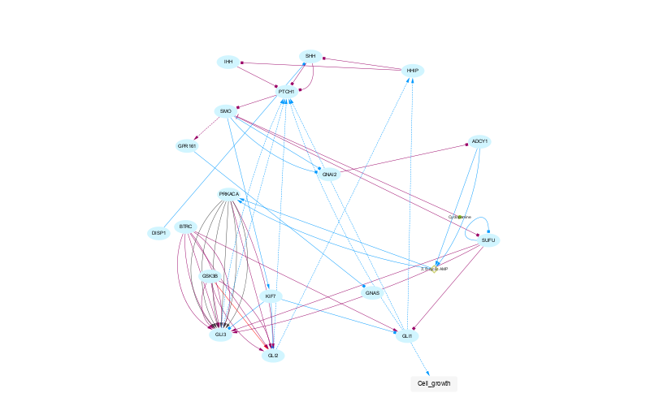
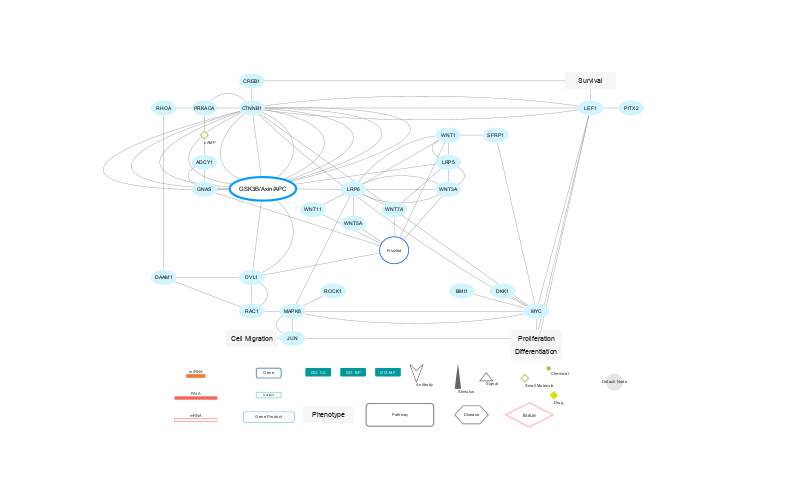
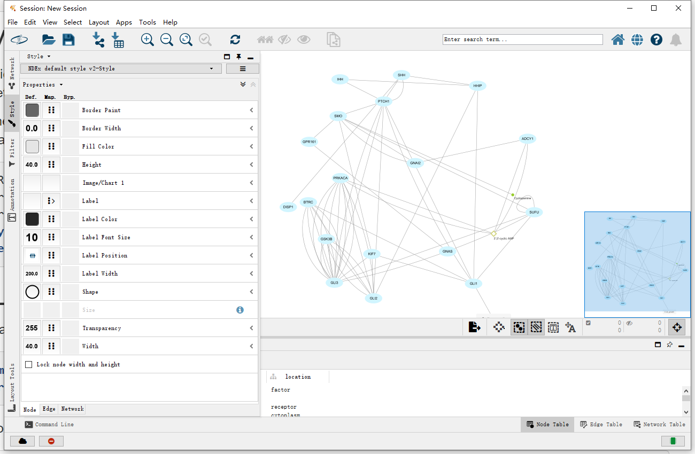
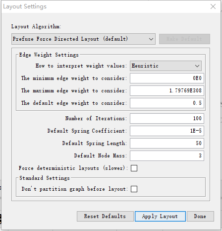
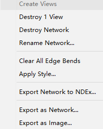
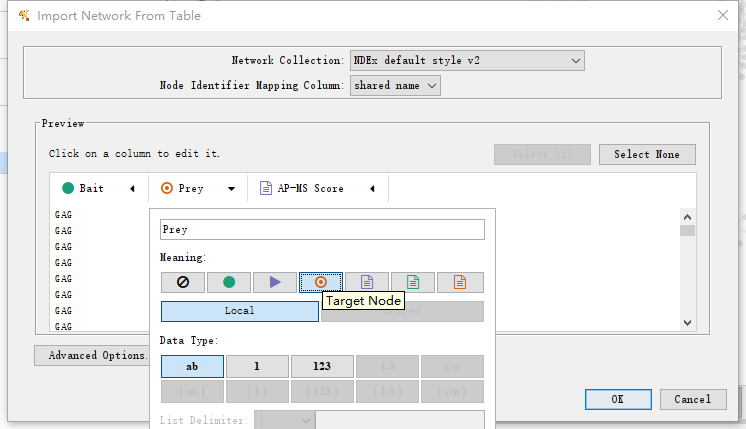
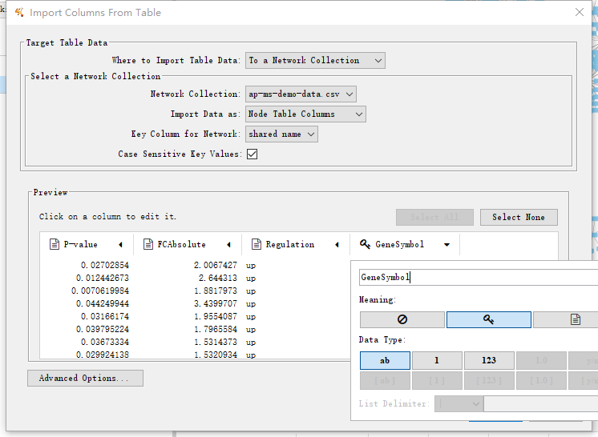

Cytoscape Ecosystem Tutorial
Cytoscape is a well-known bioinformatics tool for displaying and exploring biological networks. The Cytoscape Ecosytem extends beyond the desktop software to include web apps (like cytoscape.js), community-contributed collections of networks (NDEx) and apps (AppStore), and the CyREST programmatic interface. Programmatic access and interactive display via R, Python and JS enable a braod range of applications in network anlaysis and visualization, leveraging the Cytoscape Ecosystem. In this tutorial, you will:
- Load Network from NDEx.
- Copy Visual Style.
- Apply Layout.
- Save Network to NDEx.
- Load PPI Network.
- Load Expression Data.
- Retrieve Network from NDEx.

Setup
This protocol requires:
- An NDEx Account (instructions HERE)
- Cytoscape v3.8
- Latest cyNDEx-2 App (v3.0.1 or higher)
- Latest cyREST App (v3.9.1 or higher)
- Latest CX Support App (v2.3.0 or higher)
To update the required Apps:
- Launch Cytoscape 3.8
- Use the App Manager to update all Apps to the latest version available.
Load Network from NDEx
We will import a network from NDEx into the Cytoscape environment. Networks are provided a Universal Unique ID (UUID) by NDEx that can be used to reliably reference a particular network. The import method returns a Cytoscape Session Unique ID (SUID) for the imported network, enabling us to reference it in subsequent steps within a given Cytoscape session.
- Load the network via
File → Import → Network from NDEx.... - Type "b1e9a489-bbe7-11ea-aaef-0ac135e8bacf" in the search bar
- Click Enter to start the search.
- Double click the network.

Copy Visual Style
One of the easiest ways to apply a visual style to a network is to copy that style from another network. This lets you work on the style of your network in Cytoscape using the interactive style editor, then save the network to NDEx for future use as a template. The name of the template network becomes the name of its style and the set method assigns that style to another network, specified by that network’s SUID.
- Load the network via
File → Import → Network from NDEx.... - Type "b1c1aa27-bbe7-11ea-aaef-0ac135e8bacf" in the search bar
- Click Enter to start the search.
- Double click the network.

Copy Visual Style
The Style interface is located under the Style panel of the Control Panel.
Click the Style panel and choose the style we just get.

Apply Layout
We can easily access the layouts available in Cytoscape.
Cytoscape layouts also have parameters that can be tuned for each network.
- Apply the layout via
Layout → Settings... - Click "Apply Layout"

Saving networks to NDEx
- There is a one-step method to save networks from Cytoscape to NDEx.
- Right click the network and choose Export Network to NDEx...
- Sign in to the NDEx and enter your username and password
- Type network information and click "Export network to NDEx"


Load PPI Network
Tabular data can be read in as a dataframe and then loaded as a network in Cytoscape.
Note: A column named “source” automatically becomes the source node column; “target” becomes the target node column, and “interaction” becomes the edge interactions column. All other columns become edge attributes.
- Load the network via
File → Import → Network from URL.... - Type "https://raw.githubusercontent.com/cytoscape/cytoscape-automation/master/for-scripters/Python/data/ap-ms-demo-data.csv" in the search bar and click OK
- Set Bait column as Source node and set Prey column as Target node, then click OK

Load Expression Data
Now, the network can be annotated with expression data, provided a column in the datset matches a column in the network’s Node Table.
In this example, the column “GeneSymbol” matches the source nodes in our network in a default “name” column.
- Load the network via
File → Import → Table from URL.... - Type "https://raw.githubusercontent.com/cytoscape/cytoscape-automation/master/for-scripters/Python/data/annotation-data.csv" in the search bar and click OK
- Set GeneSymbol column as key, then click OK
- Again, we can save this network to NDEx as well, including the network and associated expression data.


Retrive network from NDEX
- Load the network via
File → Import → Network from NDEx.... - Type "Breast Cancer" in the search bar
- Click Enter to start the search.

Retrive network from NDEX
- Load the network via
File → Import → Network from NDEx.... - Type "BRCA" in the search bar
- Click Enter to start the search.